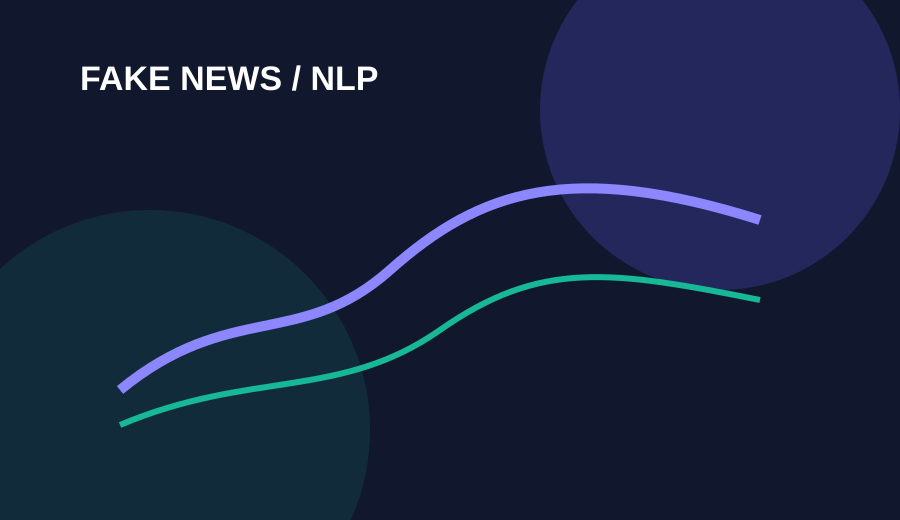
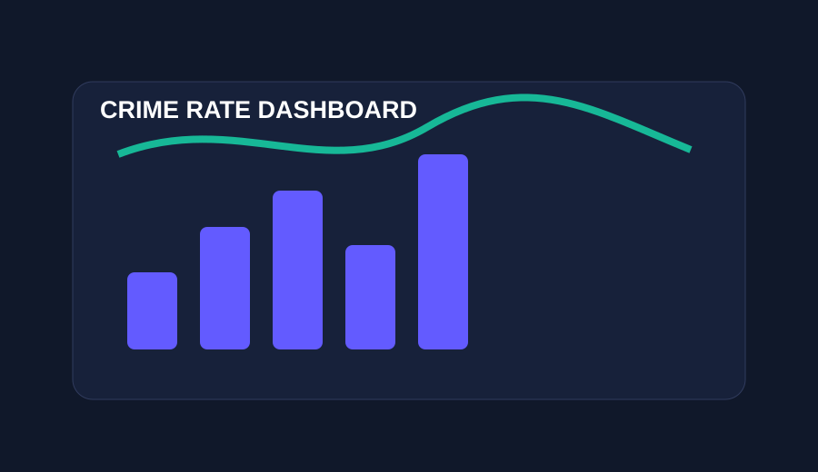
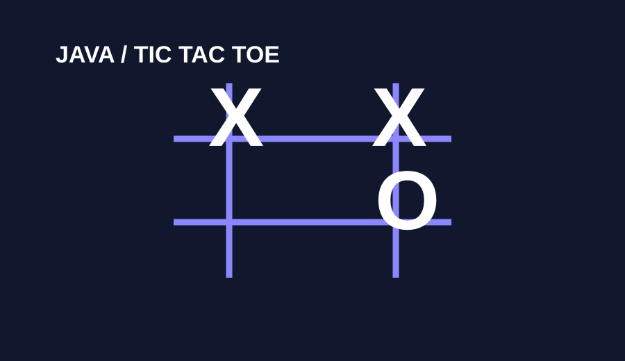

Programming
PythonJavaSQLHTMLCSSJavaScript
Open to opportunities
Aspiring Data Analyst • Data Science & AI/ML Enthusiast • Software Developer
Final-year B.Tech student in Computer Science & Data Science, passionate about turning data into useful insights and building practical software with Java, Python, SQL and machine learning.
01 / About
I’m Keshar Patil, a final-year B.Tech student in Computer Science & Data Science at R. C. Patel Institute of Technology, Shirpur, expected to graduate in 2027. My academic journey combines software development with data, AI and machine learning.
My current focus includes Java, Python, SQL, NLP, machine learning, dashboards and application development. I’m seeking opportunities where I can strengthen my fundamentals, contribute to real-world products and grow as a software/data professional.
02 / Skills
Focused on practical, job-relevant technologies rather than inflated percentages.
03 / Projects
Three starting projects are shown below. Add unlimited projects by duplicating a project object in script.js.

ML / NLP
POWER BI
JAVA / OOP04 / Certifications
Verified learning across cloud, generative AI and data analytics.
05 / Education
R. C. Patel Institute of Technology, Shirpur, Maharashtra
Relevant coursework: Data Structures, DBMS, Operating Systems, Computer Networks, Statistics, Machine Learning and Artificial Intelligence.
CGPA: 7.71
Shri C. R. Desai Swaminarayan High School, Valsad, Gujarat
Completed SSC & HSC.
06 / Resume
Your uploaded resume is the source document. Store the final PDF as assets/resume/resume.pdf; both buttons below use that exact file.
07 / Contact
For opportunities, internships, projects or professional networking, feel free to reach out.